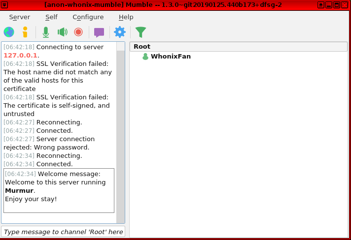
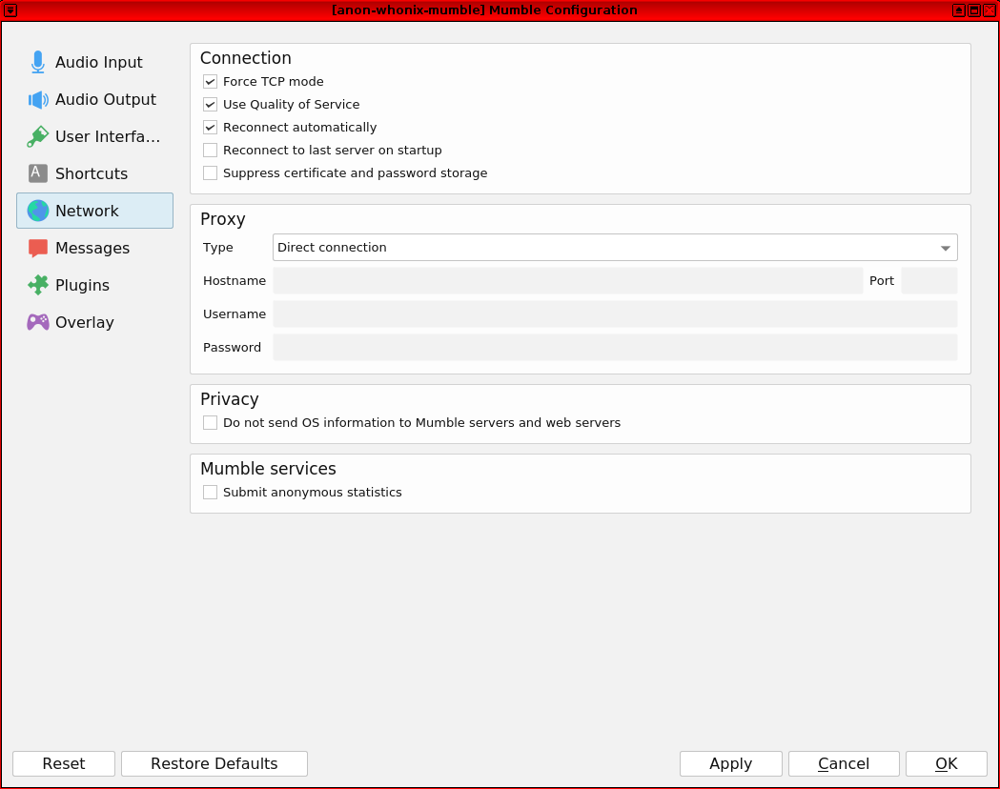
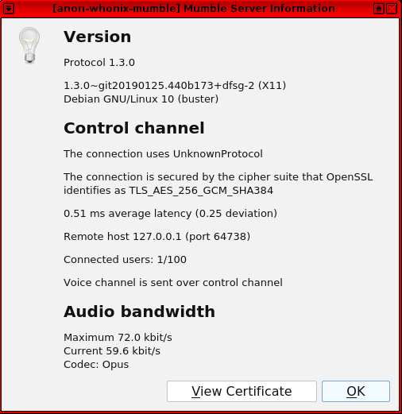

We believe security software like Whonix needs to remain Open Source and independent. Would you help sustain and grow the project? Learn more about our 14 year success story and maybe DONATE!
TelegramDocumentationWickrPrevious page: TelegramIndex page: DocumentationNext page: WickrVoice over IP (VoIP)
Open the file /usr/local/etc/torrc.d/50_user.conf in a
 text editor of your choice with administrative rights.
text editor of your choice with administrative rights.

Anonymous Voice over IP (VoIP). Encrypted, anonymous phone calls using the Tor Anonymity Network.
Introduction
Voice over IP (VoIP) is: [1]
...a technology that allows you to make voice calls using a broadband Internet connection instead of a regular (or analog) phone line. ... VoIP services convert your voice into a digital signal that travels over the Internet. If you are calling a regular phone number, the signal is converted to a regular telephone signal before it reaches the destination. VoIP can allow you to make a call directly from a computer, a special VoIP phone, or a traditional phone connected to a special adapter.
VoIP software is complex and has a large attack surface. Several threat classes have been identified in the literature: social threats; eavesdropping, interception and modification of session contents; denial of service attacks; unauthorized access to VoIP equipment; and a sudden interruption of services. [2]
Anonymizing VoIP is somewhat difficult, but still possible. It is easy to hide the IP address with Whonix thanks to Reliable IP Hiding, but the voice recognition component and slow Tor network speed (latency) are definite obstacles. Depending on your threat model, pseudonymous use of VoIP might be appropriate; this involves hidden voice communications that take place with known contacts. Consider the factors in the table below before deciding to use VoIP in Whonix.
Anonymity Factors
VoIP Domain |
Description |
IP Anonymity |
Full Anonymity [3] |
|---|---|---|---|
Tor + VoIP + Known Participants |
|
Yes |
No |
Tor + VoIP + Unknown Participants |
|
Yes |
No |
Tor + VoIP + Artificial Voice |
|
Yes |
Maybe [4] |
Whistleblowing: Tor + VoIP |
|
Yes |
With scrambler: Maybe |
Voice Recognition
It is safe to assume that everyone has had an unencrypted phone call during their lifetime and that one of them has been recorded. Voiceprints allow a person to be identified from the specific characteristics (acoustics) of their voice and it is a useful biometric marker. [6] This means personal and unique voiceprints can be used to link non-anonymous and "anonymous" voice samples; a process called voice recognition. [7]
Voice Scrambler
While commercial digital voice scramblers are available on the market, their effectiveness is a whole new field of research which is outside of the scope of Whonix.
See also:
- https://v-cloak.github.io/index.html
- https://forum.qubes-os.org/t/v-cloak-intelligibility-naturalness-timbre-preserving-real-time-voice-anonymization/39058
Software and Configuration
Some fully-functioned and reliable Libre VoIP software is already available, such as Linphone and Jitsi. [8] Unfortunately it is not possible to communicate directly over Tor using a VoIP server, because all session initiation protocol (SIP)-based clients use UDP and Tor developers closed the related support ticket years ago. [9] [10]
The best workaround for SIP clients at present is to Tunnel UDP over Tor. The main downside of this method is that phone calls over Tor are slower and less convenient compared to ordinary networks. The reason is even when UDP packets are tunneled over Tor, the restrictions of the underlying TCP protocol still apply. To account for delays, push-to-talk is a reliable communication method in this configuration -- it has similarities to using a walkie-talkie. The Guardian Project recommends that 'prowords' (procedure words) [11] such as "Roger" are used to acknowledge the end of transmission (speech, sentence). [12]
When configuring the chosen software, it is safer to delegate encryption to Tor by utilizing onion services for both the caller and receiver. If that is not possible, then only use VoIP clients which support end-to-end encryption protocols like SRTP or ZRTP. [13] This recommendation comes with warnings:
- Never use a Variable Bit Rate (VBR) codec because ZRTP cannot protect it.
- Authentication strings must be compared with the other party during the initial call. If the strings do not match then this signals an active man-in-the-middle attack is underway and the call should be terminated.
Servers and Privacy
Even with end-to-end encryption, VoIP servers servers can log call signalling metadata. This is not a major threat if:
- VoIP IDs are anonymously registered (no personal data is required for signing up).
- All parties only and always connect over Tor and have never used (or will use) accounts over clearnet.
- All calls are encrypted end-to-end.
- No communications occur with anonymous strangers.
In this case it is unlikely a malicious server could cause much harm from logging or other actions. [16]
Other than the factors outlined in this introduction section, no additional anonymity or security problems have been identified for VoIP. That said, this configuration is less tested in Whonix so the performance and voice quality could be quite variable. If this activity is necessary, then it is recommended to test the performance of VoIP software for yourself and to provide feedback about the experience.
Tox
Tox [17] [18] looks like a promising solution for secure, encrypted communications. The official client implementation is based on the TokTok protocol library, which is very feature-rich and has a variety of functions besides VoIP. By default, Tox does not attempt to cloak your IP address from authorized contacts. However, Tox is the only Tor compatible VoIP solution we know of, allowing communication with others even if they are not anonymous. [19] Desktop versions are available for every major OS, however mobile support is lacking. [20]
To learn more, refer to this entry.
Signal

There is a user report of Signal working between one instance running over Tor and the other in the clear. [21]
Notes:
- Signal is not in packages.debian.org. Only third party (signal APT repository).
- Signal Desktop requires a Phone Number Validation. "There are plans to give users more freedom by letting them use emails. Workarounds to register a phone no. anonymously may be possible, but not straight forward." - Source?
See also: Signal
Mumble
Introduction
Mumble is: [22]
... a low-latency, high quality voice chat program for gaming. It features noise suppression, encrypted connections for both voice and instant messaging, automatic gain control and low latency audio with support for multiple audio standards. Mumble includes an in-game overlay compatible with most open-source and commercial 3D applications. Mumble is just a client and uses a non-standard protocol. You will need a dedicated server to talk to other users. Server functionality is provided by the package "mumble-server".
Mumble has a number of advantages: [23] [24] [25] [26]
- The software is open source and packaged in Debian, as well as for all major operating systems.
- Client to server encryption is supported. [27]
- The communication is high quality and low latency. [28]
- It is possible to check nobody is wiretapping the connection (MITM) by verifying client/server certificates. [29]
- Push to talk is supported. [30]
- The interface is similar to Team Speak, but without its disadvantages.
- It supports TCP mode [31] which is necessary because the Tor network does not support UDP yet.
Tips
To use Mumble, one party must act as a server while everyone else can
act as a client. If the server administrator runs the server on its
local machine and also wants to connect to the server, then local
(127.0.0.1) connections are recommended since it is faster
than connecting to the onion service domain.
Group chats pose a greater risk since there is no end-to-end encryption. This means if the server is compromised, all conversations are no longer private. However, if only two parties use Mumble for communications, then end-to-end encryption protects against this threat.
When one of the two communicating parties hosts a mumble server as a Tor onion service and the other party connects over Tor, encryption is already provided by Tor. This means Mumble's own encryption is not required and so long as a server password is set (see below), this configuration should be secure. [32]
For detailed instructions on using and configuring Mumble, refer to:
Mumble Server Instructions
Newcomers are recommended to first read the introduction to Onion Services and to learn
about security benefits compared to regular 'clearnet' connections. This
wiki resource is also useful if configuring a hidden web server on the
same .onion domain, since it helps users to grasp basic
operations and test them.
1. Make necessary Whonix-Gateway™ adjustments.
 If
If Sandbox 1 was previously set in the Tor configuration
file, it must be removed for Mumble functionality.
Tor configuration file.
1 Sysmaint notice.
Ensure the VM has administrative (sudo / root) access first. See also sysmaint.
2 Platform specific. Select your platform.
Non-Qubes-Whonix
Requires booting into sysmaint session or
 unrestricted admin mode.
unrestricted admin mode.
Graphical Whonix-Gateway USER Session
This is not possible.
Graphical Whonix-Gateway SYSMAINT Session
If you are using a graphical Whonix-Gateway booted into
PERSISTENT Mode | SYSMAINT Session, take the following
step.
System Maintenance Panel ->
Open Terminal -> run
/usr/libexec/gateway-shortcuts/torrc
Graphical Whonix-Gateway Unrestricted Admin Mode
If you are using a graphical Whonix-Gateway and enabled
 unrestricted admin mode, take the following step.
unrestricted admin mode, take the following step.
Start Menu -> System Tools ->
Tor User Config
Terminal Whonix-Gateway
If you are using Whonix-Gateway with command line
interface (CLI), take the following step.
sudoedit
/usr/local/etc/torrc.d/50_user.conf
Requires booting into sysmaint session or
 unrestricted admin mode.
unrestricted admin mode.
Graphical Qubes-Whonix
If you are using Qubes-Whonix™ with a graphical desktop, take the following step.
Qubes App Launcher (blue/grey "Q") ->
Service ->
Whonix-Gateway™ ProxyVM (commonly named sys-whonix)
-> Tor User Config
Terminal Qubes-Whonix
If you are using Qubes-Whonix™ with a terminal, open
a terminal in sys-whonix and run the following command.
sudoedit /usr/local/etc/torrc.d/50_user.conf
Add.
Qubes-Whonix™ note: The IP of Whonix-Workstation™ AppVM needs to be replaced with the actual IP address. To find out the IP address of the Qubes-Whonix™ Whonix-Workstation™ AppVM, the following command can be run within the Qubes-Whonix™ Whonix-Workstation™ AppVM.
qubesdb-read /qubes-ip
Do not use IP 10.152.152.11 because that only works with
Non-Qubes-Whonix but not
with Qubes-Whonix. The IP
10.152.152.11 in line starting with
HiddenServicePort needs to be replaced.
HiddenServiceDir /var/lib/tor/mumble_service/ HiddenServicePort 64738 10.152.152.11:64738 HiddenServiceVersion 3
Save.
2. Reload Tor.
Reload Tor.
After changing Tor configuration, Tor must be reloaded for changes to take effect.
Note: If Tor does not connect after completing all
these steps, then a user mistake is the most likely explanation. Recheck
/usr/local/etc/torrc.d/50_user.conf and repeat the steps
outlined in the sections above. If Tor then connects successfully, all
the necessary changes have been made.
If you are using Qubes-Whonix™, complete the following steps.
Qubes App Launcher (blue/grey "Q") →
Service →
Whonix-Gateway™ ProxyVM (commonly named 'sys-whonix')
→ Reload Tor
If you are using a graphical Whonix-Gateway, complete the following steps.
Start Menu → System Tools →
Reload Tor
If you are using a terminal Whonix-Gateway, click
HERE
for instructions.
Complete the following steps.
Reload Tor.
sudo systemctl reload tor@default.service
Check Tor's daemon status.
sudo systemctl status tor@default.service
It should include a a message saying.
Active: active (running) since ...In case of issues, try the following debugging steps.
Check Tor's config.
sudo -u debian-tor tor --verify-config
The output should be similar to the following.
Sep 17 17:40:41.416 [notice] Read configuration file "/usr/local/etc/torrc.d/50_user.conf".
Configuration was valid3. Retrieve the Tor onion service url.
sudo cat /var/lib/tor/mumble_service/hostname
Reminder: Always backup the onion service key. This is necessary in order to restore it on another machine, on a newer Whonix-Gateway™, after HDD/SSD failure, etc. Follow the instructions below to find its location; root permission is required to access it.
/var/lib/tor/mumble_service/hs_ed25519_secret_key
The following example shows how to copy the /var/lib/tor/mumble_service/hs_ed25519_secret_key from the sys-whonix VM to the vault VM (which should be started beforehand) using qvm-copy. A dialog will appear asking for the destination VM.
sudo qvm-copy /var/lib/tor/mumble_service/hs_ed25519_secret_key
When the dialog appears asking to confirm, select vault. This copies the Tor onion service private key file to the QubesIncoming folder of the vault VM.
/home/user/QubesIncoming/sys-whonix/hs_ed25519_secret_key
Consider moving the file from the QubesIncoming folder to another preferred location.
Qubes VM Manager can be used to conveniently backup the vault and/or other VMs. Please refer to the Qubes backups documentation for necessary steps to accomplish that.
See also:
- file manager
 Thunar with Administrator Rights
Thunar with Administrator Rights - File Transfer
 Documentation for this is incomplete. Contributions are happily
considered! See this for
potential alternatives.
Documentation for this is incomplete. Contributions are happily
considered! See this for
potential alternatives.
4. Adjust Whonix-Workstation™ firewall settings.
Modify Whonix-Workstation User Firewall Settings
Note: If no changes have yet been made to Whonix
Firewall Settings, then the Whonix User Firewall Settings File
/etc/whonix_firewall.d/50_user.conf appears empty (because
it does not exist). This is expected.
Ensure the VM has sudo access first. If
PERSISTENT Mode | SYSMAINT Session is available in some
form, you must boot into this mode before these steps will work.
Platform specific. Select your platform.
Graphical Whonix-Workstation USER Session
Start Menu → System Tools →
User Firewall SettingsGraphical Whonix-Workstation SYSMAINT Session
System Maintenance Panel → Open Terminal →
run /usr/libexec/whonix-firewall/firewall50userQubes App Launcher (blue/grey "Q") →
Whonix-Workstation App Qube (commonly called anon-whonix)
→ QTerminal → run
sudoedit /usr/local/etc/whonix_firewall.d/50_user.confTerminal Whonix-Workstation
Open file /usr/local/etc/whonix_firewall.d/50_user.conf
with root rights.
sudoedit /usr/local/etc/whonix_firewall.d/50_user.conf
For more help, press on Learn More on the right.
Note: This is for informational purposes only! Do
not edit
/etc/whonix_firewall.d/30_whonix_workstation_default.conf.
The Whonix Global Firewall Settings File
/etc/whonix_firewall.d/30_whonix_workstation_default.conf
contains default settings and explanatory comments about their purpose.
By default, the file is opened read-only and is not meant to be directly
edited. Below, it is recommended to open the file without root rights.
The file contains an explanatory comment on how to change firewall
settings.
## Please use "/etc/whonix_firewall.d/50_user.conf" for your custom configuration,
## which will override the defaults found here. When Whonix is updated, this
## file may be overwritten.Also see: Whonix modular flexible .d style configuration folders.
To view the file, follow these instructions.
If using Qubes-Whonix, complete these steps.
Qubes App Launcher (blue/grey "Q") →
Template → whonix-workstation-18 →
QTerminal → run
nano /etc/whonix_firewall.d/30_whonix_workstation_default.conf
If using a graphical Whonix-Workstation, complete these steps.
Start Menu → System Tools →
Global Firewall Settings
If using a terminal Whonix-Workstation, complete these steps.
In Whonix-Workstation, view the global firewall configuration file in an editor. nano /etc/whonix_firewall.d/30_whonix_workstation_default.conf
Add.
EXTERNAL_OPEN_PORTS+=" 64738 "
Save.
5. Reload the firewall.
Reload Whonix-Workstation Firewall.
Ensure the VM has sudo access first. If
PERSISTENT Mode | SYSMAINT Session is available in some
form, and you are not booted into it, reboot the VM to reload the
firewall.
Platform-specific. Select your platform.
Graphical Whonix-Workstation USER Session
Start Menu → System Tools →
Reload FirewallGraphical Whonix-Workstation SYSMAINT Session
System Maintenance Panel → Open Terminal →
run sudo whonix_firewallTerminal Whonix-Workstation
sudo whonix_firewall
Qubes App Launcher (blue/grey "Q") →
Whonix-Workstation App Qube (commonly named anon-whonix) →
QTerminal → run sudo whonix_firewall6. Update the package lists and install necessary software.
sudo apt update
Install the mumble-server package.
sudo apt install mumble-server
7. Configure the server.
sudo dpkg-reconfigure mumble-server
Follow the recommendations below:
- Autostart is suggested, unless you want to run sudo service mumble-server start (which failed in the past).
- Higher priority? Select 'Yes'.
- Password: choose a secure password.
There is also an upstream Mumble server guide, but it does not consider onion services which are already described here. For any additional questions regarding the server setup, refer to the upstream documentation.
8. Set a server password in the relevant file.
Open file /etc/mumble-server.ini in an editor with
administrative ("root")
rights.
1 Select your platform.
2 Notes.
- Sudoedit guidance: See
Open File with Root Rights for details on why using
sudoeditimproves security and how to use it. - Editor requirement: Close Featherpad (or the chosen text
editor) before running the
sudoeditcommand.
3 Open the file with root rights.
sudoedit /etc/mumble-server.ini
2 Notes.
- Sudoedit guidance: See
Open File with Root Rights for details on why using
sudoeditimproves security and how to use it. - Editor requirement: Close Featherpad (or the chosen text
editor) before running the
sudoeditcommand. - Template requirement: When using Qubes-Whonix, this must be done inside the Template.
3 Open the file with root rights.
sudoedit /etc/mumble-server.ini
4 Notes.
- Shut down Template: After applying this change, shut down the Template.
- Restart App Qubes: All App Qubes based on the Template need to be restarted if they were already running.
- Qubes persistence: See also
Qubes Persistence
- General procedure: This is a general procedure required for Qubes and is unspecific to Qubes-Whonix.
2 Notes.
- Example only: This is just an example. Other tools could achieve the same goal.
- Troubleshooting and alternatives: If this example does not work for you, or if you are not using Whonix, please refer to Open File with Root Rights.
3 Open the file with root rights.
sudoedit /etc/mumble-server.ini
Search for "serverpassword=" and file in.
serverpassword=use_a_long_and_secure_server_password9. Restart mumble-server.
sudo service mumble-server restart
Mumble Client
Installation
Update the package lists.
sudo apt update
Install mumble.
sudo apt install mumble
Start
Launch Mumble.
Start menu → Applications →
Internet → Voice Chat
Or in a terminal, run.
mumble
Figure: Mumble Client in Whonix

Configure
Configure Mumble to suit your preferences.
Next, enable Force TCP mode.
Go to Configure →
Select "Settings" → Network →
Check "Force TCP mode" → Ok
Figure: Mumble Network Setting

Add Server
Follow these steps to add a new server. [33]
Server → Connect →
Add New...
- Servername: anything - this can be same as the .onion domain name
- Address: enter your .onion domain name or if the mumble
server is running in your own Whonix-Workstation, choose
127.0.0.1 - Port: 64738
- Username: anything
It is now possible to connect to the server.
Figure: Mumble Server Information

Technical Notes
Mumble (and mumble-server) connections pass through Tor's TransPort, but this should not have a negative anonymity impact. The reason is connections to and from onion services are stream-isolated. [34]
Security-conscious, free software developers consider browsers as a poor and dangerous option for implementing privacy-critical software. Browsers have a large attack surface (numerous security holes) and lack adequate process isolation, which can lead to the theft of private encryption keys if malicious code is run.
Asterisk VoIP Server over OpenVPN in Tor Hidden Service
Introduction
 This entry was contributed by Norbert
Szczybelski. For questions and further information, refer to the
forum discussion: How
To setup Asterisk VoIP server over OpenVPN in Tor hidden
service.
This entry was contributed by Norbert
Szczybelski. For questions and further information, refer to the
forum discussion: How
To setup Asterisk VoIP server over OpenVPN in Tor hidden
service.
Asterisk is: [35]
... a software implementation of a private branch exchange (PBX). In conjunction with suitable telephony hardware interfaces and network applications, Asterisk is used to establish and control telephone calls between telecommunication endpoints, such as customary telephone sets, destinations on the public switched telephone network (PSTN), and devices or services on voice over Internet Protocol (VoIP) networks.
Since Asterisk is open source and supports several standard VoIP protocols, it can be configured in Whonix to enable the PC to run as a server for a VoIP service.
Official Asterisk wiki documentation can be found here.
Configuration Overview
Configuration files are outlined below for:
- OpenVPN server
- OpenVPN clients
- Tor hidden service
- Tor clients
- Asterisk SIP protocol
- Asterisk extensions
Note: this is a chrooted configuration. If necessary, servers can also be isolated in virtual machines. Be sure to also update CPU microcode to protect against the Spectre and Meltdown vulnerabilities.
As an illustration, simply set up:
- 172.16.0.2/10.8.0.1 OpenVPN Server - bhyve VM on server.
- 172.16.0.3/10.8.0.10 OpenVPN Client with Apache - bhyve VM on server.
- 172.16.0.4/10.8.0.20 OpenVPN Client with Asterisk - bhyve VM on server.
- 172.16.0.5/10.8.0.30 OpenVPN Client with UnrealIRCd - bhyve VM on server.
...
- 172.31.0.9/10.8.10.10 OpenVPN Client with Apache - bhyve VM on client.
- 192.168.38.37/10.8.10.20 OpenVPN Client with UnrealIRCd - bhyve VM on client.
And so on. Next, set up static IP addresses in ccd directory for OpenVPN Client servers. Finally, generate encryption keys with OpenSSL (modified OpenSSL can be utilized for quantum-resistant cryptography).
OpenVPN Server openvpn.conf Configuration File
mode server tls-server dev tun proto tcp-server port 1194
server 10.8.0.0 255.255.0.0
ca /vpn/ca.crt cert /vpn/server.crt key /vpn/server.key dh /vpn/dh2048.pem tls-crypt /vpn/ta.key
cipher AES-256-CBC auth SHA3-512
log /var/log/openvpn.log status /var/log/openvpn-status.log
user nobody group nobody persist-key persist-tun chroot /usr/local/etc/openvpn/jail auth-nocache
- If you want to allow clients to communicate between themselves e.g. start own services like UnrealIRCd Servers.
client-to-client client-config-dir /ccd
OpenVPN Clients client.conf Configuration File
client remote-cert-tls server dev tun
<connection> remote youroniondomain.onion 1194 tcp-client socks-proxy 127.0.0.1 9050 </connection>
cipher AES-256-CBC auth SHA3-512
user nobody group nogroup persist-key persist-tun chroot /etc/openvpn/jail auth-nocache
log /var/log/openvpn/openvpn.log status /var/log/openvpn/openvpn-status.log
<ca> </ca>
<cert> </cert>
<key> </key>
<tls-crypt> </tls-crypt>
Tor Hidden Service torrc Configuration File
HiddenServiceDir /usr/local/torhs/hiddenservice/ HiddenServicePort 1194 127.0.0.1:1194
Tor clients torrc Configuration File
SOCKSPort 9050
Asterisk sip.conf Configuration File
[general] transport=udp port=5060 bindaddr=10.8.0.1 disallow=all allow=ulaw allow=alaw allow=gsm directmedia=no nat=yes localnet=10.8.0.0/255.255.255.0
[friends_internal](!) type=friend host=dynamic context=from-internal disallow=all allow=ulaw allow=alaw allow=gsm
[demo-alice](friends_internal) secret=password
[demo-bob](friends_internal) secret=password
Asterisk extensions.conf Configuration File
[from-internal] exten=>6001,1,Dial(SIP/demo-alice,20) exten=>6002,1,Dial(SIP/demo-bob,20)
Quantum Resistant OpenVPN
For greater security, a modified form of OpenSSL can be utilized:
Use of the above software is at the user's own risk and security is not guaranteed; always conduct research beforehand to assess whether it is suitable in your circumstances.
Warnings
Skype
Does this mean if I combine Whonix with proprietary software like Skype, that my IP address and location will be safe?
Yes, the IP address and location remain hidden. Skype was tested to work in Whonix several years ago, but it appears to have stopped working around 2013/14. [36] Developers have very little interest in testing or providing functional Skype instructions, because it is strongly recommended against. As gnu.org notes: "Skype contains spyware. Microsoft changed Skype specifically for spying."
Any corporation that willingly changes flagship software to enable secretive surveillance of users (without notice) cannot redeem itself. In addition: [37] [38]
- Microsoft has long delayed providing a secure end-to-end encrypted communication channel until the announcement of the non-default "Conversations" option in 2018. [39]
- After Microsoft purchased Skype in 2010 they changed the architecture, leading observers to note this would increase the ease of surveillance. Client-side encryption was replaced with server-side encryption, allowing unencrypted data to be disseminated when requested. [40]
- Skype is closed source software and inherently distrusted based on Microsoft's behavior. For example it was revealed in 2013 that Skype had a program entitled "Project Chess", which was exploring legal and technical issues in making communications available to law enforcement and other agencies. [41] [42]
- Company executives lied in 2012 when they denied giving government agency access to customer communications.
- Skype has a long history of serious security flaws and conducting unannounced spying, such as reading BIOS data from the PC and accessing the Firefox profile folder during execution (where passwords are stored). [43]
None of these issues are related to Whonix or Tor; the blame falls squarely on the company producing the software. At best, Skype usage can only be considered pseudonymous rather than anonymous, particularly since it acts like malware. It would be completely unsurprising if Skype linked all account names inside Whonix-Workstation to the same pseudonym.
As well as the threat posed by Skype's design, behavior and parent company, there are additional risks to this non-freedom software:
- Accounts: if you log into an account without Tor, even once,
then it should be considered non-anonymous. It is virtually certain logs
are retained that can link Tor and non-Tor use together.
- Always follow the wiki recommendations to not mix anonymity modes.
- Communication partner: if the other party did not create their account over Tor, or has not exclusively paired the account with Tor, then it is easy to verify your identity.
- Encryption: as noted above, the encryption architecture is weak by default and the Skype authority is unworthy of trust -- consider the encryption broken at the outset. Always remember you do not control the encryption keys and the closed source software is hostile to privacy by design.
- Voice recognition: as noted in the introduction, today's sophisticated software can easily identify you, even if Skype encryption is not broken.
In conclusion, Skype cannot be used for truly (pseudo-)anonymous activites, even though it does not leak the IP address/location. This means it is useful for circumvention only. Anybody capable and willing to communicate with partners who exclusively create and use accounts over Tor have far better options available.
Refer to the technical footnotes if you are interested in why Skype works at all in Whonix over Tor (since Tor only supports TCP). [44] [45]
TORFone
Whonix has consistently advised against TORFone -- a fork of SpeakFreely -- since the developer in 2013 recommended against using the software: [46] "I did not think this project as a finished product for practical use." At that time, the project received an overall poor review in the mailing list thread.
It is unclear whether the situation has improved over the last several years, but the software is under active development based on the number of recent commits. Any reader who is interested in testing TORFone in Whonix is encouraged to report their experience here.
USB Webcam Passthrough
Avoid this course of action -- the firmware of USB devices could be flashed by malware and cross infect the host.
VoIP Software List
There is a Comparison of VoIP software page on Wikipedia. Any client that is chosen should be open source and if onion services are not being used on both ends of the communication (where Tor handles the encryption), then it should also support voice encryption such as ZRTP.
Sources
Footnotes
- https://www.fcc.gov/general/voice-over-internet-protocol-voip
- See: Voice over IP: Risks, Threats and Vulnerabilities
- No information is available to uniquely identify the VoIP user.
- The language structure and syntax might be unique.
- For more than a decade, government agencies have been recording private phone calls to identify individuals by their unique voiceprint, while also recording and transcribing personal conversations, see: Finding Your Voice for a detailed description based on intelligence disclosures.
- https://en.wikipedia.org/wiki/Speaker_recognition#Technology
- Writing styles are also personal and unique. Individuals can be identified with a similar method called Stylometry, which is documented on the Surfing Posting Blogging wiki page.
- See: Wikipedia: Comparison of VoIP Software to research alternatives.
- https://gitlab.torproject.org/legacy/trac/-/issues/7830
- This does not mean it will not be supported in the future, but the wait could be lengthy.
- https://en.wikipedia.org/wiki/Procedure_word
- Once your calling partner hears "Roger", it is understood that it is safe to answer and then also terminate the answer with "Roger" or "Out" when leaving the conversation.
- ZRTP has been implemented in Jitsi as GNU ZRTP4J, and in Linphone as oRTP.
- https://web.archive.org/web/20240111013332/https://zfoneproject.com/faq.html#vbr
- Research has found:
... in encrypted phone calls using a certain combination of technologies, preselected phrases can be spotted up to 50 percent of the time on average, and up to 90 percent of the time under optimal conditions. ... Variable-bit-rate encoding, Wright says, adjusts the size of data packets being sent over the Internet based on how much information they actually contain. For example, when the person on one end of a VoIP call is listening rather than speaking, the packets sent from that person's computer shrink significantly. Also, packets containing certain sounds, such as "s" or "f," can take up less space than those containing more-complex sounds, such as vowels.
Encrypting the packets after they've been compressed scrambles their contents, making them look like gibberish. But it doesn't change their size, which is what would give away information to potential eavesdroppers. - Apart from trying to exploit random Tor users.
- https://wiki.tox.chat/users/faq#what_is_tox
- https://tox.chat
- https://wiki.tox.chat/users/tox_over_tor_tot
- https://wiki.tox.chat/clients
- In reply to Patrick Schleizer (Telegram) Did you test this? How is voice quality? Yea, I just started receiving calls out of blue on both my GrapheenOS phone with Orbot and always on vpn set and also on iPod touch connected to GLiNet Mudi w/ Tor firewall. So far I had about a 60% success rate with calls that connect on first attempt and consistent quality with no drop outs. Wire I have about 80%. Both these devices are heavily firewalled no side channel leaks occurring it is absolutely working not with ideal reliability on signal but it's a start. Note all my calls have been from signal + Tor to signal only . I have not tested calls between two TOR signal parties.
- https://packages.debian.org/trixie/mumble
- https://sourceforge.net/projects/mumble/
- https://github.com/mumble-voip/mumble
- https://www.mumble.com/mumble-server-support.php
- https://wiki.mumble.info/wiki/FAQ/English
- Is
Mumble encrypted?:
Your whole communication to and from the server is always encrypted. This encryption is mandatory and cannot be disabled. The so-called control channel, which transports your chat messages and other non-time critical information, is encrypted with TLS using 256 bit AES-SHA. The voice channel carrying speech and positional audio is encrypted with OCB-AES 128 bit. You and the server authenticate to each other using digital certificates like they are used for secured connections in Web-browsers.
- Although some voices are reported to sound 'metallic' or 'robotic'.
- How can I verify that there is nobody wiretapping my connection (MITM)?
- https://www.mumble.com/support/mumble-server-push-to-talk.php
- https://ccm.net/faq/26187-mumble-force-tcp-mode
- Alternatively, the interested reader can learn more about Mumble certificates for defense in depth, as well as using channel passwords instead of server passwords and so on.
- https://wiki.mumble.info/wiki/Murmurguide#Connecting_to_Murmur_Server
- See Stream Isolation for further information on TransPort, SocksPort, stream isolation and related issues.
- https://en.wikipedia.org/wiki/Asterisk_%28PBX%29
- https://web.archive.org/web/20160612142118/https://community.skype.com/t5/Security-Privacy-Trust-and/Is-Skype-blocking-TOR-exit-nodes/td-p/1706941
- https://www.wired.com/story/skype-end-to-end-encryption-voice-text/
- https://en.wikipedia.org/wiki/Skype_security
- Increasing the ease with which the company and other parties could spy on the communications of hundreds of millions of people. Even with "Conversations" set, Microsoft still has access to a host of metadata.
- Microsoft routinely releases data to law enforcement agencies upon request, including users' geographical locations.
- https://www.schneier.com/blog/archives/2013/06/new_details_on.html
- Snowden leaks also confirm Skype became part of the PRISM program on 6 February, 2011.
- https://en.wikipedia.org/wiki/Skype_security#Flaws_and_potential_flaws
- Quote Silver
Needle in the Skype:
Skype can't work without a TCP connection
But Skype can work without UDP
Blocking UDP is not sufficient
- Refer to the "Skype over Tor" section here: guardianproject.info: Voice over Tor?
- https://lists.torproject.org/pipermail/tor-talk/2013-February/027215.html
Categories: Documentation